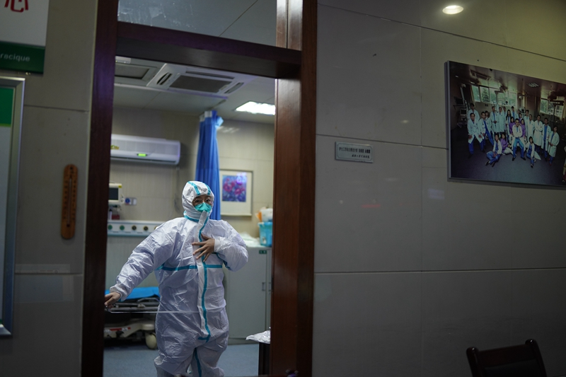
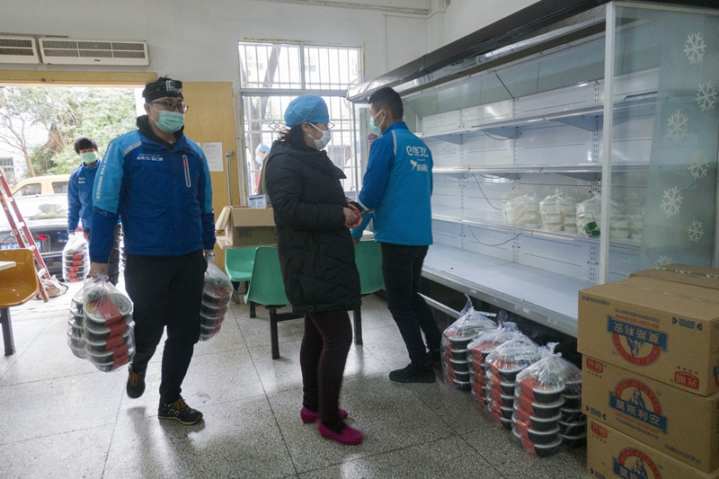

战“疫”物资漂洋过海的最后一公里
原文链接 备份链接 华科北京校友会和德国校友会联合采购的医疗物资进入医院一线。受访者供图 本文约3940字 预计阅读时间11分钟 作者 王景烁 **编辑 陈卓 ** 60小时后，那批2.5吨重的防护物资，终于从美国旧金山抵达武汉华中科技 …
有救援经验的社会组织，响应了。
武汉宣布封城后三小时，郝南就在社交媒体上发布了nCOV Relief（后改名NCP生命支援）志愿者招募书，发起新冠肺炎患者和疑似病人居家隔离治疗项目。郝南身在北京，是卓明灾害信息服务中心负责人，也是一名前牙医。凭借多年在民间救灾中担当“研判员”的嗅觉和医生的专业训练，他明白，武汉医疗资源即将枯竭。几小时内，他和伙伴收到近2000份报名，从中筛选出200人左右的团队，包括具有临床经验的一线医生、社工、心理咨询师等。他们按照三甲医院流程，建起一套线上医疗分级支持系统，为无法住院的患者提供跟踪式的医疗和居家隔离指导，并帮助危重病人联系医院，还联合公益伙伴开始发放制氧机，为患者争取更多时间。
越伦是郝南的合作伙伴，nCOV Relief团队的核心成员。她同时为武汉大学北京校友会工作，在不同组织、团队之间对接资源。肺炎疫情暴发后，医用防护物资需求瞬间井喷。一线医护“裸奔”的状况令很多人坐不住了，纷纷起来救医生。越伦觉得，一时间像有无数个救灾的创业公司同时跑动起来，不断自我迭代，跑通需求、采购、运输整条线，干掉重重关卡，一刻不停歇地将物资送往疫区腹地。
血浓于水的校友会，响应了。1月23日，下属有人民医院、中南医院等承担新冠肺炎救治重任的武汉大学以校友总会名义，号召校友捐赠物资。武大北京校友会立刻召集医学分会讨论，医生校友们给出建议：“捐防护服”。当天晚上，校友会就投入采购。同样地，华中科技大学（下称华科）德国校友会会长叶继文在听到封城消息后，立即决定先垫资采购物资，抢时间。1月28日，华科德国校友会捐赠的2.5万套防护服、24万副口罩和4000个护目镜，开始分批从德国运往北京，送往湖北16个城市的64家医院。
专业经验丰富的公益机构，响应了。1月22日，壹基金正式启动响应。基于过往救灾经验，他们一开始就将湖北其他15个地市和武汉并重，依靠这些年搭建起来的救灾在地合作网络，将物资送往这些地区。
在现场的个人志愿者，也响应了。1月25日，回到荆州老家的志愿者程瑞发起“燃灯计划”，为“灯下黑”地区筹集物资。
中国人都响应了。
一个月以来，社会力量前所未有地参与到这场抗疫总动员中，以其灵活、多元、广大、自下而上的组织力，深入各个末梢，发现和瞄准疫情中多种多样的需求，在救援中发挥了重要作用。他们还将援手伸向困境中的孕妇、智障儿童、临终者、农民工、慢病患者、非肺炎急重症病人等多个弱势群体。
更值得铭记的是，武汉市民们纷纷行动，自救救人。他们是为医护人员提供住宿的酒店老板、送餐的餐馆老板、接送医护人员和运送物资的“摆渡人”、心理咨询师、社工，以及各行各业的普通市民。他们互助守望，织成一张张网，在封城后最危难的一段时间，维系着这座城市的生命线。
随着中央应对疫情工作领导小组对疫情防控工作部署的落地，“国家队”入场，武汉市社会秩序正在有序恢复。在政府和民间的合作下，就医、物资供应、住宿、交通等各项功能，渐入正轨。
“物资！物资！”
医用防护物资就是战士的装备。前方打仗，后方必须源源不断输送物资。
“高手在民间。”一名公益机构人士在看到志愿者古典团队总结的捐赠攻略后表示。古典是名职业生涯规划师，原本1月24日正好有批口罩可以捐，“捐了就完了”，没想到加了医生微信后发现不能停。疫情急速扩大，一线缺乏储备。有些社区卫生人员没有防护服和手套，徒手搬尸体。有的医生穿着几层围裙就去看发热病人。感受到一线的那种急迫，古典只能继续募集。这也是很多物资捐赠团体的历程。医用物资是消耗品，湖北就像一个吞噬物资的黑洞。疫情仍在扩大，消耗量也越来越大。
“沙滩上鱼太多。我们想多救一条小鱼，再多救一条小鱼，再多救一条小鱼⋯⋯”古典团队表示。
募资、采购、物流和财务四个小组很快成立，核心团队六个人，志愿者团队总计60多人。1月27日，古典团队已经走通整个流程，总结出八点“血淋淋”的攻略，包括如何识别货源，判断医院需求，如何在全球找货、通关、走物流。28日，他们上线了SOP（标准作业程序）。1月29日，面对中国买家全球抢货导致很多国家口罩价格大涨的情况，古典团队走向俄罗斯、拉丁美洲等地区，之后对接了公募基金会，截至2月16日，共募款1123万元，已使用1114.7万元；采购了13万个N95级别口罩、18万个一次性医用口罩、约8.3万个FFP2级别口罩、约7万件防护服、5.6万个护目镜，以及100万双医用手套，发往275家医院。
民间志愿团队、校友会等社会团体、企业，在这次物资总动员中发挥了关键作用，各显神通，他们全球搜货，克服封城、封路后的重重困难和运力不足，绕过各种大坑，才将货送到医院和医生手里。一些其他社会捐赠者也找到古典团队和武大北京校友会等组织，委托他们分发物资。
“我们以创业公司的方式去做这个事儿，才能够递到这些地方。”武大北京校友会志愿者小林表示。项目启动后，校友会迅速搭建起100多人的工作团队。校友中的专业医生志愿团队负责采购，校友企业也帮助采买和解决物流。团队又在每个地市布局志愿者做在地支持。进入每个地方都不容易。“经常要判断，打通一个环节把货递下去，得找到谁？”小林称。
“资源间的连接中有很多缺位，校友会最核心的就是补到这个位置，消化信息沟通的隔阂。”越伦说。
华科德国校友会把物资捐赠当作一个工程项目来做。分配完任务，每个小组就自行组织，线上运作。秘书长何烁统筹，对项目按工业流程化管理，每天都有一个“燃尽表”。需求组给医院挨家打电话，建立数据库，对接湖北16个城市、64家医院的117个科室。华科德国校友会会长、德国物流公司易优集团创始人叶继文1月24日去厂家采购，1月27日货到手，次日就发出第一批货，由华科北京校友会接力，盯国内物流。
中欧校友会一开始就确定指针：做政府做不了的事，不添乱，不在国内抢物资。他们与校友复星国际董事长郭广昌合作，认捐复星国际全球采购的物资，并以中欧校友会湖北分会资源做在地支持。
2月15日，武汉雨雪交加。刚刚投入使用的雷神山医院屋顶部分受损。16日，中欧校友会湖北分会接到建设单位中建三局求助，由于医院已入住病人，维修工人有感染风险，急需医用N95口罩。中欧校友会立刻协调，将校友原本要通过直升机运往黄冈的物资调出一部分，装上口罩，赶运到雷神山。
社会捐赠一度成为医院防护物资支撑，甚至一些定点医院前期也严重依赖社会捐赠。以最紧缺的防护服为例，春节期间，单供应湖北，全国防护服产能缺口超八成。根据政府相关部门2月5日数据，自1月24日，中国共进口防护服385.4万件。复星一家占比超过10%。相比之下，截至1月底，国内生产企业累计向湖北发送医用防护服13.6万件。医用防护服日产量为2万件，1月28日产量只有0.87万件。

截至1月底，国内生产企业累计已向湖北省发送医用防护服13.6万件。图/财新记者丁刚
这些民间迅速发起的“物资小组”相互快速学习，共享资源，寻找解决方案。志愿者拉起一个个信息互通群、资源对接群。1月24日除夕晚上，武大校友会成员夏正发现，好多人都在忙海外物资采购，找落地案例。她知道武大纽约校友会和清华波士顿校友会已经走通了流程，就拉群请他们分享经验，很快就加入100多人。她又从别的群邀请了海关等相关部门和公司的人进群。“解决完问题的就退出去，让新人进来。”
民间快速发现、灵敏响应、行动力强，有时一拥而上会造成点混乱，但确实缓解了医护人员在病毒面前裸奔，为他们筑起了一道紧急隔离屏障。对一些基层医院来说更是如此。“如果不是他们，我们医院可能就全军覆没了。”湖北孝感市云梦县某医院一位护士称。民间还捐赠了呼吸机、制氧机、消毒机、插管时可佩带的正压防护面罩、可移动CT车等急用物资。
随着政府征用国内主要医用防护品工厂产能，以及海外大批量存货被买空，国际运力骤减，一些国家也开始禁止医用防护物资外运，民间搞物资越来越难。此外，春节后国内产能提升，海外、政府物资陆续到达，武汉医院物资紧缺程度有所缓解。不过，不时仍可见医院、医生向外求救，特别是湖北的一些基层医院，需求仍然迫切。
“沙滩上的鱼太多了⋯⋯感激。”一名缺少隔离衣和鞋套的医生向古典团队发来求助。2月18日，原本已打算撤出的古典团队发布报告，总结快速行动的项目经验，号召更多人加入，“希望多救一条小鱼，希望多一个人救小鱼，+1的力量”。
救人网络
救人，是第一要务。
2月3日，《人民日报》旗下的《国家人文历史》杂志社社长王晓宇发起项目，商量找志愿者搜集信息，通过《人民日报》上报中央督导组。项目随即启动，《人民日报》全媒体也开通渠道，向社会征集“确诊、疑似、密切接触者以及无法排除的发热者”四类求救信息。
“一开始没想到基数这么大。”做文旅产业服务的丫丫是核心志愿者。她说，最早只是小圈子里的20多个志愿者，远远不够。《人民日报》拉了团队，她协调高和资本又征集志愿者，最终志愿者将近2000人。
“志愿者总计搜集了4万多条求助信息。”丫丫表示，团队会把信息合并，形成数据库，上报有关部门。危重病例则加急上报给中央督导组。
机会总是有限的，不得不设置门槛。“一开始是要求全家感染，亲人去世，家中有孩子。”丫丫称。2月头几天是疫情第二波高峰，第一批还没有得到救助的人当中，不少转向危重，“需要加急上报的特别多，每天差不多有200人”。
“我们每天其实也只能力争解决8个点到10个点的转换。”丫丫又另外想办法，找关系直接对接医院渠道，力争再解决一部分床位需求。
“一开始，大家希望能够解决越多越好，后来发现人实在太多。好多志愿者觉得自己快要崩溃，我跟他们说，你得坚强，才能帮助更多的人。”丫丫说。
郝南也在想尽办法救人。2008年，郝南还是刚从北京大学毕业不久的一名牙医，作为医务人员去汶川支援，发现情况与自己预想的完全不同。解决救灾的信息不对称问题，比作为医生去一线更重要。郝南自此一直从事灾害信息工作，2010年成立了卓明灾害信息服务中心。“12年来，我几乎每天的工作都是在为这样级别的灾害做准备。”
但这次，郝南没有投入去解决信息不对称问题，而是办起了线上诊所，“前线医院救不过来的时候，就得有人帮着去救”。NCP生命支援为病人提供跟踪式的监测和全方位支持，组织的大夫有200多人，不少是主任、副主任医生。团队还包括社工、心理咨询师等志愿者。高峰时，每日门诊咨询约200人次。患者经过初步问诊后，按照病情轻重，被安排在不同的微信群，总计约有20个病人群。一开始的设想是分级诊疗，轻症患者可在指导下在家隔离治疗，重症患者被识别后对接到医院。
阿力是北京一所公立医院的急诊科医生，在微博看到郝南发布的志愿者征集信息后，就加入了团队，后来成为线上诊所负责人。除夕晚上，阿力疯狂号召朋友们加入志愿团队。“我想帮一下那些去支援武汉的师兄师姐，我不想让他们那么累。”
在武汉“大排查”清零病人之前，阿力几乎每天三四点睡，早上八九点起，“大家都休息的时候，那些患者的资料你得去审核。就跟火神山那些建筑工人一样，早一天建成，可能就早进去十个病人”。
对于轻症病人，医生们主要是跟进他们的每日活动，观测病情进展，根据病人手头已有的药物资源提供建议，同时安慰情绪，减少焦虑，提醒加强营养，“在身体虚弱的情况下，来回在医院和家之间跑，又特别焦虑，特别累，其实是不利于疾病恢复的。”团队特地撰写了居家隔离防护指南。也有许多病人病得不轻，憋气厉害，于是团队协调银杏公益伙伴捐赠制氧机。有一个病人自己的氧气瓶用完时，正好赶上制氧机发放，及时续氧，后来病情大幅缓解。
但是，起初设想的闭环还是没有走通。疫情比预想的还要严重，医院连重症患者都救不过来，团队能对接医院转换的比例远远不够。而对于重症病人，线上团队能做的有限，有时能利用自己的专业知识报出氧饱和度等指标，帮助患者成功叫到120急救。有时，病人能够入院，但也有很多时候，病人被送了回来。
郝南自己从头到尾跟过一个全家感染案例。女儿1月16日去过海鲜市场附近，3天后发病。父母两三天后，也开始发烧。女儿最后一次给郝南打电话时，告诉郝南，不用忙活了，父亲已经把母亲的吸氧管拔掉，“不去医院遭罪了”。母亲2月3日去世后，父亲2月7日通过《人民日报》全媒体渠道入院，但还是不幸于2月10日左右在医院去世。郝南大哭了一场。
不过，即使是这样，有不少患者家属在缓过劲来之后，还是会来致谢，表示想当志愿者，帮助更多人。
“医生用了一点点的专业知识，尽可能地给了一些人与人的关怀。”阿力觉得，志愿者们对病人和家属的回馈，让他们又有了继续待下去的动力。
而在《人民日报》等组织协调下的志愿团队搜集的信息，通过媒体和内参等渠道传达，很重要的作用是，向指挥部提供救治情况的真实信息，为正确、科学决策提供了帮助。
在郝南看来，方舱医院开放，是救治的转折点。到2月9日-2月13日，武汉锚定“清零”目标，对“四类人员”集中管理，发起“应收尽收”的总攻。
在新任武汉市委书记王忠林上任后第二天，2月15日即在武汉市新冠肺炎疫情防控指挥部视频调度会上表示，要加快建设方舱医院，再造3万床位，要做到“床等人”，绝对不能“人等床”。王忠林还要求，部署开展为期三天的集中拉网式大排查，实现确诊病例清零。他表示：“我们要认真反思，为什么我们动用了这么多人力、物力，还不能做到全部查清，而记者暗访就能发现1000多例病患。”
随着政府工作推进，郝南线上诊所的肺炎重症病人已经基本被收治。每日问诊量少了很多。“政府到位了，我们就很轻松。”阿力终于可以舒口气了。
除了联系其他公益伙伴捐赠营养品等重症肺炎患者需要的物资，郝南团队又开始和其他志愿团队协作，帮助肿瘤等其他重症的患者寻找仍可做化疗、急性手术等治疗的医院。
2月11日晚，刘海培、叶媛两位95后的年轻人发起了“不要红包”小组，召集伙伴，搜集病人求助信息。搜集病人求助信息。他们很快发现，很多并非新冠肺炎的重症病人同样危在旦夕。截至2月18日，他们收集到167个病例，通过联系医院等各种渠道，只解决了不到三分之一，此间有六位病人去世。这些患者有一半以上是癌症和肿瘤患者，还有透析病人、脑溢血等突发疾病病人等。“不要红包”小组将这些病例信息整理成数据库。
通过各方呼吁，非肺炎病人看病问题也得到了政府关注。2月16日，武汉公布了一批开放给非新冠肺炎病人的急诊。不过，癌症患者治疗、急性手术等，仍然需要关注。
市民相互守望
疫情暴发后，武汉人张军也加入到物资大军，为多个公益机构和社会捐赠人协调湖北的各种资源。这是他第一次做志愿者，“救医生就是救我们自己”。
1月27日晚8点，武汉市民开窗齐喊“武汉，加油！”张军在窗口看了几秒钟，没有力气去跟他们一起喊，回到两台电脑前，“一边哭，一边把事情对接完了。”张军还发现，身边的朋友、老师、同学拧成了一股绳，把多年积累的资源拿出来，去帮助医生。“不管男的女的，去搬货，去求着所有人，以前不会这样放下自己的面子，就为了把东西送过去。”
邱贝文开餐馆，除夕晚上一夜未眠，关于疫情的信息扑面而来，看到医生没饭吃，她凌晨4点多发出一条信息：“只要医护人员需要吃饭，无论哪个点，提前半小时打我电话，24小时在线。”她和老公、老公的弟弟和弟媳，还有公公和婆婆都没有过年。
消息发出后，早上7点就有医院打电话订餐，电话连续两天从早到晚没停过。邱贝文没想到订餐需求如此庞大。更让她没想到的是，疫情远比她想象的要严峻得多，她第一次站在了疫情风暴中心。第一天，邱贝文送了270多份餐，跑了多家医院。晚上，她去汉口一家医院送餐，天下着雨，消毒水味道扑面袭来，全是身穿防护服的人，“那一瞬间寒毛都竖了起来”。配送完已经是凌晨两点多，邱贝文赶紧把孩子送到了母亲家，“直到现在我都没有见到儿子一面”。
送餐这件事，邱贝文坚持下来了，高峰期每天要送800多份，现在还要送400多份。在那种关键时候能把自己所有恐惧都压住的是什么呢？“是那些很需要你的人。”
她记得有天去洪山区的医院送餐，那天风刮得很大，对面走过来一个小护士，23岁左右的样子，后面还带着三个很年轻的男护士。他们穿得很少，应该是怕送餐的等久了，里面就穿了一件薄薄的秋衣，外面套着白大褂，戴着帽子和防护口罩。“她从远处小跑过来叫我姐姐的那一瞬间，印象太深刻了”。
大多数订餐是一二十份，邱贝文不收钱，碰到量大上百份的，邱贝文收一点，每份15块。
凌晨突然宣布封城后，出行也成问题。第二天早晨起来上班的医护人员面对的是一个几乎停摆的城市。已经承受巨大压力的医护人员，有的不得不骑车两个小时，甚至走几个小时去上班。肖雅星在武汉经营四家酒店，其中三家在医院附近。大年三十当天，肖雅星建起微信群，在朋友圈号召其他酒店加入“医护酒店支援联盟”，为医护人员免费提供住宿。
肖雅星没想到会有这么多酒店响应。“当天下午五点四十几分建的群，到晚上12点截止，我记得非常清楚，是86家酒店加入。”等到第二天晚上12点，已经有300家酒店，多是单体酒店和民宿公寓。负责统计酒店信息的志愿者魏敏记得，还有酒店老板已经回了老家，不在武汉，但仍然愿意拿出客房。
有住宿需求的医护人员远超预期。酒店信息一出来，基本全部爆满，缺口量还很大。第二天中午，大型连锁酒店也开始进入。“在人性跟危险面前，很多人选择了人性的一面。”魏敏说。
联盟提出无接触入住，医护人员直接进去，不去前台办理手续，彼此之间眼神交流。有些酒店员工不愿意这时候值班，老板就亲自上。
“到初四初五的时候，真的都快撑不住了。”一方面是酒店开支，更急迫的是消毒问题。有些酒店因为没有工作人员，从大年三十到初六，一直没有任何消毒措施。1月31日，联盟通知，此前上线的159家单体酒店、民宿、公寓和小型连锁酒店不再接待医护人员。1月31日18点前，将清空房间做消毒准备工作。
酒店下线后，一些医院开始与酒店协商征用，负责消毒。肖雅星回忆，在医院开始陆续征用酒店三天后，政府也开始大面积征用酒店。“大家撑了这么久，都不容易。”魏敏说。携程已经给这些酒店减免了一年的平台佣金。最早加入的这些酒店为医护人员和相关方提供了宝贵的缓冲时期，后期这一需求需要医院方和政府方接手解决，“希望不要一直消耗平凡人”。
这一个月里，穿梭在这座空荡荡的城市里的“摆渡人”，则成为城市的生命通道。
2月12日，15单。晚上10点半，45岁的志愿车主高宇送完当天最后一单医护人员，正在家里吃晚饭，第二天约车的信息又传过来：武汉市中心医院的一名医护人员需要早上7点从家赶到医院上班。
这是高宇做志愿者司机的第20天，每天在武汉各个城区间穿梭10多个小时，送医务人员上下班成为武汉封城后高宇的日常。吃饭、睡觉很不规律，一切围绕着医护人员用车约单转，高宇曾在凌晨三点接送一位医护人员下班，回家补个觉，早上七点又去送下一单医务人员出行。

1月31日，武汉市第五医院员工食堂，外卖小哥免费给医护人员送餐。
高宇的妈妈是一名医生，他自小就对医护人员有亲近感，在这个非常时期必须为医护人员做点事。“城市交通停摆了，医务人员的工作不能停摆，我们志愿车夫来做摆渡者。”高宇说。
1月24日，高宇建了一个武汉市内护送医护人员出行微信群，专门接送医护人员上下班。据财新记者不完全统计，至少上千名私家车司机组建了数十个民间车队，送医护人员上下班，给有困难的市民送急需物资，尽力维系城市的生命线。
滴滴、高德等打车平台也参与进来。一些志愿者就接入了高德在武汉推出的“风韵出行”。志愿者司机接到订单后即可前往接送。
滴滴在大年三十当天，组建了“医护保障车队”，为武汉医务工作者提供免费出行服务。滴滴出行相关负责人告诉财新记者，目前保障车队有200多名司机。滴滴还在武汉组建了拥有1300多名网约车司机的“社区保障车队”，为社区民众提供免费出行服务。
大学生也能发挥作用，比如付金康，武汉一名大四学生，回仙桃老家过年。他学习软件工程，被选为武汉护送医务人员出行QQ群的群主，群里有3000人，都是需要用车的医务人员和志愿者车夫。由于需求量很大，很快又开了个QQ群，高峰期他要管理4000多人。
付金康每天在手机、电脑屏前帮助对接医务人员和志愿车主，高峰时期一天接到上千条短信，早上起床在电脑前一坐就是16个小时，吃饭都是边吃边回复消息。忙到晚上一两点才睡觉，睡梦中还会被求助的电话、短信吵醒。“争分夺秒，为了能够帮助更多人。”
救助边缘
北京市晓更助残基金会理事戴榕至今为鄢成的去世感到痛心。1月29日，湖北黄冈市红安县华河镇鄢家村脑瘫患儿鄢成因家人被隔离，无人照料，最终去世，带来很大震动。
晓更助残基金会下的融合中国项目网络（下称融合中国）是全国范围内的心智障碍者家长组织，最早介入对鄢成的救助。戴榕介绍，融合中国在全国有249家家长组织，其中武汉有三家，鄢成的父亲鄢小文正是融合中国武汉家长组织的会员，还是骨干。
1月23日，鄢小文被作为新冠肺炎疑似病例隔离时，曾向武汉的家长组织提出了鄢成的照料问题，融合中国秘书处也得知此事。但当时，村里已经答应帮忙照料，大家觉得不会有什么问题。但三天后，情况恶化，武汉家长组织向秘书处发出长长的求助信息，说事态严重。融合中国辗转找到中国残联，层层联系，找到红安县残联，县残联再与华河镇和鄢家村联系。
问题却卡在了“最后一公里”。1月26日晚，华河镇卫生院和村干部曾带人到家里给鄢成喂水、量体温，还先后送鄢成到华河镇卫生院和杏花乡卫生院，但两家基层医院因不具备防护条件，担心感染其他病人，均拒绝接收。鄢成最终又被连夜送回了家中。
回到家中的鄢成面临无人敢去照料的绝境。“村里面临的问题是，这个孩子有可能被感染，所以村里面的所有人都怕。”戴榕说，融合中国曾提出解决方案，先拿出一笔救济款，付费给前去照料的村民。但最终村里没有找到一件防护服，没人愿意前去照料。等到1月27日，看护人员终于申请到一套防护服，但鄢成已经无法进食。最终，1月29日中午，鄢成被转移至乡里临时建的隔离点后，不久去世。
鄢成去世的消息给心智障碍家长们造成巨大打击。“整个家长群都弥漫了那种悲观的情绪。”戴榕说，家长们第一个反应是想到了自己的孩子。戴榕也是这群家长之一，她的儿子有自闭症。
1月30日，融合中国发起“特殊需求困难家庭疫情期间紧急救助网络”，整合融合中国各地的家长组织、家长小组，再联动其他机构，形成一个救助网格。一端尽可能触达有特殊需求求助的家长，另一端链接各方资源，及时给予救助。
“我们的定位很简单，首先有信息网格，最起码可以建立一个信息报告机制，第二通报给当地的残联以及其他政府职能部门，同时连接当地的社会资源。”戴榕说。每个求助案出现后，会单独建群，大家一起想办法，找资源，做好预案。比如，对类似鄢成的孩子事先对接好家附近的隔离点。截至2月18日，“紧急救助网络”已经接到16个个案求助。
也有的求助者是整个群体。因为交通不便，湖北200多名患有癫痫的孩子买不到或者拿不到药，病情加重。“紧急救助网络”将病患信息通报给省残联，组织专家医生做紧急答疑，还汇总药单信息，通过政府相关部门、公益组织、志愿者网络，协调解决配送。但个别农村家庭仍然面临“最后一公里”问题。
京东健康也参与了药品的供应与配送。2月10日，京东健康上线了针对湖北地区的慢病断药求助登记平台，一方面对接慢病用药患者的需求，同时也对接药企和药店等供应方。京东健康有关负责人介绍，药品供应商，除京东健康自己的大药房，还通过平台联动湖北当地的线下药店，匹配供需双方信息，尽快帮助已断药的患者找到所需药品。平台上线一周，就接到有效求助信息超过1万条，其中精神类疾病、重症康复期患者的药物需求比较突出，其他多为高血压、糖尿病等一般慢性病。同样重要的是，解决物流问题。京东大药房正动员当地药房和志愿者加入配送。
章娅彤是一名非诉律师，也是武汉市义工联一支义工队的队长。封城后，她和义工联的伙伴，一直在为养老院、福利院等机构服务，“这种弱势群体所在的组织，我们是最熟的，我们主要就做这一块，帮他们送物资，或者是他们有需要我们想办法协调，比如送一些医疗用品，送老人去透析。”章娅彤觉得，疫情刚暴发时，各方都很混乱，但最坏的阶段已经过去了。
不是孤岛
章娅彤家就在武汉著名的民俗文化街吉庆街边上，是武汉最有市井味的地方，原来天黑后大排档热闹得不得了，“歌声、乐器声、谈笑声，从街头传到街尾”。
如今的吉庆街静悄悄的。
2月15日，武汉要求小区完全封闭管理，相当于要求所有市民自我隔离。章娅彤也被隔离在家，不过仍在线上对接各种需求。志愿者司机拿到通行证仍可以出去服务。小区居民们则发起团购买菜。章娅彤觉得，大家互相帮忙，“总比每个人都是一座孤岛的那种感觉要好很多”。
社工也在积极介入服务。
1月底，武汉大学社工系老师郁之虹组建起一支线上社工团队，一开始是现在和之前的学生，还有校医院的医生。后来哈尔滨、上海等外地高校的老师又帮忙对接了100多个社工和心理咨询师，形成200人左右的团队。“我希望组建一支团队，既能照顾他们的身体，还能回应他们日常的一些诉求。”郁之虹最初重心在跟社区合作，形成线上、线下联动。
这次武汉抗疫，病人排查、民生等大量压力堆集在社区。“我服务的北湖街道，他们一个街道3万居民，80多个工作人员，发热隔离的时候都有20个，减员非常严重。”社工们通过线上科普、答疑、陪护，线下帮助与社区人员沟通，大大减轻了社区压力。
居家隔离转向集中隔离后，线上社工团队又进驻一些隔离点，包括洪山体育馆的方舱医院。
“线上线下配合，通过线上模式实现异地增员的效果。”郁之虹介绍，实地工作人员人手不够，线上的志愿者网络可以提供咨询、问诊、情绪舒缓、对接线下人员等服务。
方舱医院投入之始，后勤一度跟不上，病人情绪不太稳定。“社工共振”线上社工团队进入方舱医院。
“疫情对全民来说是一场灾难。病患无论是进到方舱医院，还是隔离点，都多多少少经历了各种创伤。有的是亲人离世，有的可能病危，有的是自己前途未卜，情绪焦躁很正常。”郁之虹表示。社工团队在方舱医院发掘比较热心的病友，成立舱友志愿团队，“按病床分区，每个区选一个区长，做些协调，帮着发药发饭，安排大家做卫生。”病人情绪一旦稳定，不再那么焦虑恐惧之后，其能量就能调动起来。
疫情中的人需要的支持是全方位的。郁之虹回忆，有位隔离者的丈夫在弥留之际想见她一面，经社工团队和社区的安排下，“陪着她到医院去看了丈夫最后一眼”，固然是生离死别，对生者和死者也都是种安慰。
发动社会力量、群众自组织力量的作用，也越来越被指挥部重视。“我来武汉这两三天意识到，疫情防控必须发动群众，只要群众积极参与，小区的防控问题，小区自己就能做得很好，防得很严。”王忠林说。
不光是防控，缺羽绒服、蔬菜、暖气、卫生巾和安心裤，眼镜坏了，手机屏碎了⋯⋯封城中，医护人员生活上这些大大小小的事，很多是靠武汉乃至全国的志愿者、公益机构、企业在火速对接、解决。
在走过最初一拥而上搞物资救急的阶段后，不少公益机构、民间团体也开始审视自己的定位和专长，针对疫情需求提供更多元的救助。
王文丽是武汉一名全职妈妈，2015年开始运营全职妈妈社群。她和朋友发现，受疫情影响，一些孕产妇的产检中断，也无法去月子中心，于是发起了宝宝守护计划，提供孕产期的支持陪伴。每天晚上，还有专业大夫在线答疑、问诊。
中国儿童友好社区促进计划联合壹基金，发起一线医护子女关爱行动，陪伴医护人员孩子。字节跳动基金会则很早就联合中国红十字基金会发起了医务人员救助基金，截至2月19日，累计已资助全国511位感染新冠肺炎的医务人员，其中包括10位不幸殉职的一线医务工作者家庭，总计收到1922条有效申请获得救助。
腾讯公益与各地慈善总会，发起了“战役天使守护计划”，为各地支援湖北的医护人员提供补贴和保障。湖北省心理协会组织志愿者开通了官方心理热线。在北京的幸福公益基金会也协同清华大学心理学系，开通了24小时心理援助热线。一些公益机构则在关注疫情对保姆等打工人群的影响，并为缺乏渠道和购买力的人群，如困境儿童等，专门筹集防护物资。许多团队还发起项目，支持在线工作、在线学习。
四面八方、自我生长、联结，点点滴滴力量汇聚，社会力量在这次救灾中充分体现了价值，织成一张社会救助网。
赋能社会
“国家治理体系、治理能力现代化一定是多元参与的。”壹基金秘书长李弘这样评论。当灾难级别指数级增长，超过既有能力短期可增长的速度时，民间自助的灵活性和及时性就体现出来了。“对于实时、动态的防控需求，民间可以发挥特殊优势。”清华大学公共管理学院副院长邓国胜说。此次疫情带来的启示，是释放社会活力，给社会发挥更多作用的空间。
回望2008年汶川地震以来的12年，一些专业的公益机构和公益力量成长起来，比如壹基金、卓明灾害信息服务中心等，都在汶川地震后不断充实自己的专业力量。壹基金自2011年以来，就着眼于支持地方社会组织建立联合救灾机制，并通过培训为其赋能。在这次驰援湖北的行动中，这些在地网络发挥了重要作用，尤其在外部救援力量因疫情难以进入的情况下。
“汶川地震时各种各样的草根NGO（非政府组织）很多。这次我们看到公益机构的合法性、规范性有了很大提升。”清华大学公益慈善研究院副院长贾西津说。
邓国胜认为，从这次疫情应对情况看，进一步加强政府与社会协同的机制和网络，是下一步的重点。他介绍，经过汶川地震的冲击，2013年雅安地震时，四川省有一个创新做法，省政府成立省群团组织参与社会治理协调小组，沟通协调各方需求等，雅安市也专门成立了抗震救灾社会组织和志愿者服务中心。四川省不再指定少数机构垄断社会捐赠，而是搭建起社会组织参与救灾的制度化渠道，并为他们服务。
邓国胜表示，湖北等中部地区是社会组织发展的一块洼地，官员对社会组织参与社会治理的认知、引导和服务也不够。但无论抗疫，还是疫情过后的重建，都有大量工作需要社会组织和民间团体来做，比如灾后创伤干预等。建立政府社会协作平台，仍然非常迫切。
此次湖北陷入危难时，除了注册公益组织，还有大量的临时性团队做应急救援，从零开始积累经验。贾西津表示，新力量及其生长方式是此次抗疫救援的突出特点。很多人通过非组织化的动员形成社会行动，非常有效，“互联网技术提供了很大支持”。
“这次疫情像把一部长电影压缩在了几分钟之内，把平常看不出来的一些因果、模式、特征集中显现。这不仅仅是一个疾病的问题，其实是整个社会的公共治理问题。”贾西津说。
1月23日，湖北心理热线开通后，咨询师杜洺君每天都很忙。她发现，一些个体的痛苦，已经不是可以通过另一个生命的启发，或者由心理咨询推动而放下的。这背后是更宏大的社会问题，需要更大的力量。（点击收听湖北心理热线组织者杜洺君的讲述。从一人一部电话到组织起200多人的心理咨询团队，她帮助被快速卷入疫情中的湖北人解决突发的心理障碍、走出阴霾。）
令郝南感到有所欣慰的是，很多年轻志愿者快速地成长起来。就像汶川地震时的他自己一样，“会做事了”。饭圈女孩、“95后”乃至“00后”，经历了他们承担责任的“成人礼”。
章娅彤和志愿者朋友刘柏驿，则已经和一些来自全国各地的伙伴们相约，疫情过后，武汉相会，去“过早（吃早饭）”，“去看武汉三镇的繁华，看武汉的烟火味⋯⋯看长江两岸的灯光”。
希望那一天早日到来。
应采访对象要求，文中越伦、小林、丫丫为化名；财新记者薛小丽、钱童、包志明、吴红毓然，实习记者黄雨馨、张阳、曾美雅对此文亦有贡献
注：本文刊发于《财新周刊》2020年第7期，原题为：民间大救援
[《财新周刊》印刷版，各大机场书店零售；按此优惠订阅，随时起刊，免费快递。]
此文限时免费阅读。感谢热心读者订阅财新通，支持新闻人一线探求真相！成为财新通会员，畅读财新网！
更多报道详见：【专题】新冠肺炎防疫全纪录（实时更新中）
原文链接 备份链接 华科北京校友会和德国校友会联合采购的医疗物资进入医院一线。受访者供图 本文约3940字 预计阅读时间11分钟 作者 王景烁 **编辑 陈卓 ** 60小时后，那批2.5吨重的防护物资，终于从美国旧金山抵达武汉华中科技 …
原文链接 备份链接 “ - 疫 情 之 下 - 武汉的疫情就像一簇紧簇的乌云，笼罩在每一个人的心头。但所幸，在这个受伤的城市中，在每台志愿者车里，在疲于奔波的路上，总有那么一群可爱的人，温暖着我们前线医护工作者的心。 ” 1 2020年 …
原文链接 备份链接 一座人口过千万的超级大都市在突降灾疫后陷入休克，然后艰难走出混乱无望 财经封面。创意设计/黎立 文 |《财经》特派武汉记者 刘以秦 信娜 王小《财经》记者 房宫一柳 黎诗韵 俞琴 王丽娜 王静仪 陈亮 李斯洋 李皙寅 …
原文链接 备份链接 同力协契 共克时艰 武汉“封城”已三周，新冠肺炎全国感染人数还在持续上涨。 所有人都在期待拐点的到来，无数白衣天使依旧坚守在抗击疫情第一线，一刻不敢松懈。社会各界也在通过各种方式参与到这场没有硝烟的抗疫保卫战里。 这 …
原文链接 备份链接 《战疫口述记》，是燃财经在新型冠状病毒肺炎期间推出的特别栏目，记录疫情亲历者的观察和感受。本文为第6篇，查看前5篇请点击《我和公司都快熬不住了》《节后返京，太太太南了》《我的“流浪”春节》《农村这样防肺炎》《我在武汉 …